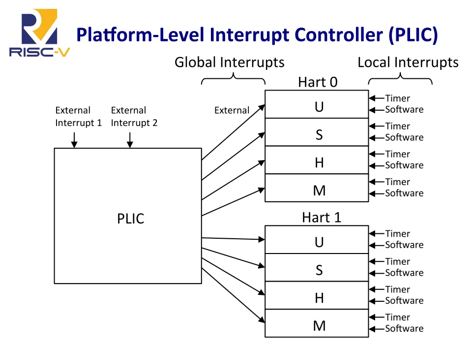

操作系统小记（一）：从 PID 0 开始¶
Estimated time to read: 9 minutes
本次作为助教尝试重构 OS 实验 Lab2，终极目标是想把实验和理论课结合到一起，让同学们实现的 OS 能模拟理论课例题中进程在不同时间到达的场景，从而能够计算自己实现的调度算法的平均等待时间、周转时间和响应比等。然而，实现进程生命周期的动态管理实属不易，光是理清 Linux 实现的细节就花费了两位助教 3 天的时间。本文汇总我们对 Linux 进程管理的理解，并记录 Lab2 重构的过程。
Linux 进程生命周期¶
PID 0 与初始化工作¶
首先让我们研究 Linux 第一个进程（PID 0）的执行。整体的顺序是：
图中
j 表示 jump 指令，tail 表示尾调用，call 表示普通调用
-
_start()这里我们关注 S 模式 CSR 的初始状态。OpenSBI 进入内核时，
sstatus为0x200000000，也就是仅设置了UXL为 2（64 位用户态），其他位均为 0。此后执行sret将因为SPP=0而进入用户态。 -
_start_kernel()：将写好的变量init_task地址加载到tp，令自己成为第一个 task（PID 0）arch/riscv/kernel/head.Sla tp, init_task la sp, init_thread_union + THREAD_SIZE addi sp, sp, -PT_SIZE_ON_STACK变量定义如下：
init/init_task.cstruct task_struct init_task __aligned(L1_CACHE_BYTES) = { #ifdef CONFIG_THREAD_INFO_IN_TASK .thread_info = INIT_THREAD_INFO(init_task), .stack_refcount = REFCOUNT_INIT(1), #endif .__state = 0, .stack = init_stack, // ...其中栈的实现与具体架构有关，在链接器脚本中定义：
-
start_kernel()：初始化各项资源，最后调用rest_init()创建第一个用户态线程（PID 1）和内核态线程（PID 2）init/main.cstatic noinline void __ref __noreturn rest_init(void) { pid = user_mode_thread(kernel_init, NULL, CLONE_FS); pid = kernel_thread(kthreadd, NULL, NULL, CLONE_FS | CLONE_FILES); kthreadd_task = find_task_by_pid_ns(pid, &init_pid_ns); schedule_preempt_disabled(); cpu_startup_entry(CPUHP_ONLINE); }rest_init()创建好kernel_init和kthreadd后，会先主动调度一次（名字里带schedule的函数基本都用于发起调度），让这两个线程做一些工作-
再次调度回来时，继续执行下面的函数，令自身（PID 0）进入空闲状态：
kernel/sched/idle.cvoid cpu_startup_entry(enum cpuhp_state state) { current->flags |= PF_IDLE; arch_cpu_idle_prepare(); cpuhp_online_idle(state); while (1) do_idle(); }所有 CPU 核心都会从 PID 0 拷贝一份，存放到
idle_threads作为该核心的空闲线程。当一个 CPU 上没有可运行的进程时，调度器会选择对应的空闲线程运行。顾名思义，空闲线程啥事不干，只负责让 CPU 处于空闲状态，等待中断或调度器唤醒。
这里有一处小细节：
rest_init()单独拆成一个函数是有原因的，可展开下面的方块查看。rest_init() 为什么要单独拆出来？（AI 分析）
它被单独拆成一个
rest_init()，主要是为了解决“代码生命周期”“并发时序”和“语义分层”这三件事。核心动机
-
避免被回收的 init 段代码被继续执行或引用
start_kernel()标注为__init，其代码所在的.init.text会在引导后通过free_initmem()释放以节省内存。- 但在“系统活过来”之后，我们要创建并运行内核线程（PID 1 的
kernel_init、kthreadd），并最终进入 CPU 的 idle 循环。这些路径不能放在会被释放的.init.text里。 - 所以把“后续工作”挪到常驻的
.text段中的rest_init()里，确保即便释放了.init段，也不会踩空。 - 文件里就有明确注释：如果不这么做，“root 线程和 init 线程之间可能出现竞争，使得
start_kernel在 root 线程进入 idle 前就被free_initmem回收”，因此rest_init()必须是非__init。
-
防止编译器把非 init 的逻辑内联回 init 段
rest_init()被标注为noinline：旧版 gcc（3.4）会把它内联进start_kernel()，那样又会把本应常驻的代码拉回.init.text，释放后出事。- 通过
noinline强制它留在常驻段，和上面“避免回收”一起实现内存生命周期的安全。
-
明确阶段边界：从“单核、关中断、无调度”的早期引导，过渡到“多任务、可调度”的正常运行
rest_init()做的事正好是“系统已可调度”之后才应该做的：- 用
user_mode_thread(kernel_init, …)启动 PID 1（init 进程的内核端入口）。 - 启动
kthreadd并用complete(&kthreadd_done)与 PID 1 同步，确保 kthread 框架准备就绪。 - 设置
system_state = SYSTEM_SCHEDULING，开启might_sleep()/smp_processor_id()等检查。 - 让引导 idle 线程至少
schedule()一次，然后进入cpu_startup_entry(CPUHP_ONLINE)的 idle 循环。
- 用
- 这些都依赖调度器已经初始化完成，且不应再属于“早期 init”阶段。
一些属性与细节的设计意图
__noreturn：从rest_init()不再返回（idle 循环里待机），清晰表达控制流，帮助编译器优化与可读性。__ref：rest_init()虽在常驻段，但需要访问一些__initdata（比如kthreadd_done），用__ref抑制“段不匹配”告警，表明这是有意为之且在 free_initmem 前完成。- 亲和性与时序防护：在
sched_init_smp()完成前，迁移还不完全可靠，所以把 init 进程固定在启动 CPU（PF_NO_SETAFFINITY、set_cpus_allowed_ptr），避免早期迁移带来的不确定性。 - 概念解耦：
start_kernel()负责一次性、可回收的早期硬件/子系统初始化；rest_init()负责过渡到多任务运行时并创建最初的内核/用户空间进程。这样便于内存回收、清晰职责和维护。
一句话总结
- 把“系统活过来后的工作”放在单独且常驻的
rest_init()里，既能安全释放.init段以节省内存，又能正确地切入可调度的运行态，创建 PID 1 与kthreadd并最终进入 idle；同时用noinline、__noreturn、__ref等属性确保编译与链接期不会把它错误地折回可回收的 init 段或破坏控制流。
PID 2 与进程拷贝¶
接下来让我们看看第一个内核线程（PID 2）是怎么运行起来的。
pid_t kernel_thread(int (*fn)(void *), void *arg, const char *name,
unsigned long flags)
{
struct kernel_clone_args args = {
.fn = fn,
.fn_arg = arg,
};
return kernel_clone(&args);
}
int copy_thread(struct task_struct *p, const struct kernel_clone_args *args){
/* p->thread holds context to be restored by __switch_to() */
if (unlikely(args->fn)) {
/* Kernel thread */
memset(childregs, 0, sizeof(struct pt_regs));
/* Supervisor/Machine, irqs on: */
childregs->status = SR_PP | SR_PIE;
p->thread.s[0] = (unsigned long)args->fn;
p->thread.s[1] = (unsigned long)args->fn_arg;
p->thread.ra = (unsigned long)ret_from_fork_kernel_asm;
} else {
*childregs = *(current_pt_regs());
if (usp) /* User fork */
childregs->sp = usp;
childregs->a0 = 0; /* Return value of fork() */
p->thread.ra = (unsigned long)ret_from_fork_user_asm;
}
p->thread.sp = (unsigned long)childregs; /* kernel sp */
}
-
通过
kernel_thread()创建的都是内核线程，运行在内核态。因为创建时会带fn参数，在copy_thread()中会走内核线程的分支，设置好s[0]、s[1]和ra，让新线程从ret_from_fork_kernel_asm()返回，执行传入的函数。稍后会介绍 PID 1 作为内核线程是如何进入用户态的。
copy_thread()的另一个分支情况涉及系统调用 fork，将在后续的文章分析。 -
ret_from_fork_kernel_asm()在实验文档中已经给大家展示过了，它是一个简单的蹦床函数，负责跳转到ret_from_fork_kernel()。后者也只是简单地调用fn(fn_arg)，对于 PID 2 来说就是kthreadd()。 -
kthreadd()的核心是一个无限循环：kernel/kthread.cfor (;;) { set_current_state(TASK_INTERRUPTIBLE); if (list_empty(&kthread_create_list)) schedule(); __set_current_state(TASK_RUNNING); spin_lock(&kthread_create_lock); while (!list_empty(&kthread_create_list)) { struct kthread_create_info *create; create = list_entry(kthread_create_list.next, struct kthread_create_info, list); list_del_init(&create->list); spin_unlock(&kthread_create_lock); create_kthread(create); spin_lock(&kthread_create_lock); } spin_unlock(&kthread_create_lock); }- 内核线程的请求放在队列中，并发情况需要用锁保护。这段代码向我们展示了一个消费者线程应该如何安排锁的获取和释放：涉及锁保护的的数据结构的查询（
list_empty()和修改list_del_init()）的整个过程，需要持有锁；而执行create_kthread()这种可能阻塞的操作时，必须先释放锁，避免死锁。 - 它永远不会返回，因此 PID 2 永远不会走到
ret_from_exception()，这是它与 PID 1 的重要区别。
- 内核线程的请求放在队列中，并发情况需要用锁保护。这段代码向我们展示了一个消费者线程应该如何安排锁的获取和释放：涉及锁保护的的数据结构的查询（
PID 1 与用户态¶
最后我们来看看 PID 1 是如何进入用户态的。
-
copy_thread()中有一个内联函数为我们揭示了内核栈的内存布局：arch/riscv/include/asm/processor.h#define task_pt_regs(tsk) \ ((struct pt_regs *)(task_stack_page(tsk) + THREAD_SIZE \ - ALIGN(sizeof(struct pt_regs), STACK_ALIGN)))内核栈布局 在实现了系统调用和用户态（Lab4）后，我们会知道用户态栈和内核态栈是分开的。内核栈将用于：
- Trap 处理期间内核代码的调用栈
-
进入 Trap 时保存寄存器状态，相应的结构体为
struct pt_regsarch/riscv/include/asm/ptrace.hstruct pt_regs { unsigned long epc; unsigned long ra; unsigned long sp; unsigned long gp; unsigned long tp; unsigned long t0; unsigned long t1; // ... /*Supervisor/Machine CSRs */ unsigned long status; unsigned long badaddr; unsigned long cause; /* a0 value before the syscall*/ unsigned long orig_a0; };
这一布局很重要，接下来我们研究 Trap 处理时会用到。
此外，内核线程设置了
SR_PP | SR_PIE，这意味着sret将返回用户态且开启中断。PID 2 因为永远不会sret所以这一点无关紧要，但 PID 1 用到了这一点。 -
kernel_init()的内容：- 等待
kthreadd完成初始化工作 kernel_init_freeable() -> smp_init()：启动其他 CPU 核心-
run_init_process()：加载第一个用户态程序现代 Linux 发行版的第一个用户态程序一般是 systemd，负责启动用户空间的各种服务。
- 等待
-
run_init_process()使用kernel_execve()来加载用户态程序，接下来的流程与exec系统调用相同，可以看这篇文章：How does the Linux Kernel start a Process。用户态线程创建与运行 此处不对流程展开介绍，仅关注其中的重点：
start_thread()。include/linux/elf.h#define START_THREAD(elf_ex, regs, elf_entry, start_stack) \ start_thread(regs, elf_entry, start_stack)arch/riscv/kernel/process.cvoid start_thread(struct pt_regs *regs, unsigned long pc, unsigned long sp) { regs->status = SR_PIE; regs->epc = pc; regs->sp = sp; regs->status &= ~SR_UXL; if (is_compat_task()) regs->status |= SR_UXL_32; else regs->status |= SR_UXL_64; }它设置了存放在内核栈顶的
struct pt_regs：- 开启了其中的
SR_PIE epc设置为用户程序的入口地址sp设置为用户程序的用户态栈地址
此外也可以发现，Linux 支持 RV64 架构下运行 RV32 的用户态程序，这是通过控制
sstatus的UXL位实现的。 - 开启了其中的
-
ret_from_exception()：与
kthreadd()不同，kernel_init()最终会结束，返回到它作为fn(fn_arg)被调用的地方（ret_from_fork_kernel()）。然后继续返回到ret_from_fork_kernel_asm()，它接下来将调用ret_from_exception()。该汇编函数的任务是从
struct pt_regs中恢复寄存器，并执行sret结束 Trap 处理。arch/riscv/kernel/entry.SSYM_CODE_START_NOALIGN(ret_from_exception) REG_L s0, PT_STATUS(sp) andi s0, s0, SR_SPP bnez s0, 1f /* Save unwound kernel stack pointer in thread_info */ addi s0, sp, PT_SIZE_ON_STACK REG_S s0, TASK_TI_KERNEL_SP(tp) /* * Save TP into the scratch register , so we can find the kernel data * structures again. */ csrw CSR_SCRATCH, tp 1: REG_L a0, PT_STATUS(sp) REG_L a2, PT_EPC(sp) REG_SC x0, a2, PT_EPC(sp) csrw CSR_STATUS, a0 csrw CSR_EPC, a2 REG_L x1, PT_RA(sp) REG_L x3, PT_GP(sp) REG_L x4, PT_TP(sp) REG_L x5, PT_T0(sp) restore_from_x6_to_x31 REG_L x2, PT_SP(sp) sret- 它首先检查
sstatus.SPP判断稍后将返回的是什么态。如果是用户态（PID 1 情况）则额外做一些工作：保存内核栈指针到thread_info，并将tp寄存器写入sscratch，以便后续进入 Trap 时能找到内核数据结构。 - 不管返回的是什么态，都会从内核栈
struct pt_regs中恢复所有寄存器，并执行sret。
注意到
start_thread()中设置了regs->status，仅SR_PIE被置位，意味着SR_SPP=0，因此sret将返回用户态，并且开启中断。 - 它首先检查
Success
至此，我们理清了 Linux 启动阶段最重要的三个进程（PID 0、1、2）的执行流程，理解了内核栈的布局和 struct pt_regs 的作用，并且知道了内核线程和用户态线程的区别。
Linux Trap 处理¶
Linux 的 Trap 处理位于各架构下的 entry.S，RISC-V 的处理流程梳理如下：
-
中断与异常的分流：
arch/riscv/kernel/entry.S/* * MSB of cause differentiates between * interrupts and exceptions */ bge s4, zero, 1f /* Handle interrupts */ call do_irq j ret_from_exception 1: /*Handle other exceptions */ slli t0, s4, RISCV_LGPTR la t1, excp_vect_table la t2, excp_vect_table_end add t0, t1, t0 /* Check if exception code lies within bounds*/ bgeu t0, t2, 3f REG_L t1, 0(t0) 2: jalr t1 j ret_from_exception先前将
cause读入了s4寄存器，这里根据最高位判断是中断还是异常。中断进入do_irq()处理，异常则通过异常向量表分流到具体的异常处理函数。
异常向量表¶
异常向量表在 entry.S 的末尾：
.section ".rodata"
.align LGREG
/* Exception vector table */
SYM_DATA_START_LOCAL(excp_vect_table)
RISCV_PTR do_trap_insn_misaligned
ALT_INSN_FAULT(RISCV_PTR do_trap_insn_fault)
RISCV_PTR do_trap_insn_illegal
RISCV_PTR do_trap_break
RISCV_PTR do_trap_load_mi
#...
RISCV_PTR do_trap_ecall_u /* system call */
具体的函数实现基本都在 arch/riscv/kernel/traps.c 中。以系统调用（ecall 异常）的处理为例，上表中为 do_trap_ecall_u：
asmlinkage __visible __trap_section __no_stack_protector
void do_trap_ecall_u(struct pt_regs *regs)
{
if (user_mode(regs)) {
long syscall = regs->a7;
regs->epc += 4;
regs->orig_a0 = regs->a0;
regs->a0 = -ENOSYS;
syscall = syscall_enter_from_user_mode(regs, syscall);
if (syscall >= 0 && syscall < NR_syscalls)
syscall_handler(regs, syscall);
syscall_exit_to_user_mode(regs);
} else {
//...
}
}
-
user_mode(regs)检查sstatus.SPP，确认是用户态的系统调用 -
syscall_handler()是一个类似kthread()的 wrapper，只不过是用于系统调用的跳转表：
通用中断处理（IRQ 层）¶
以前学《操作系统》、读《Linux Kernel Development》时，笔者没太理解外部中断、IRQ Line 之类的东西。这次探究 RISC-V 架构的中断处理时，才明白这些概念。
下列文章对 RISC-V 架构的中断子系统做了很好的分析，推荐阅读：
- RISC-V 中断子系统分析——硬件及其初始化 - 泰晓科技
- RISC-V CLINT、PLIC 及芯来 ECLIC 中断机制分析 —— RISC-V 中断机制（一）_riscv clint-CSDN 博客
简单总结一下：
-
RISC-V 规范定义了 CLINT（Core-Local Interrupt Controller）和 PLIC（Platform-Level Interrupt Controller）两种互补的中断控制器。前者负责本地中断（如定时器中断、软件中断），后者负责外部中断（如外设中断）。PLIC 负责的外部中断才是现实世界中最重要的中断来源，然而操作系统课程并不涉及外设和驱动等话题。
 RISC-V PLIC 负责外部中断的处理 -
外部中断有非常多的来源，比如键盘、鼠标、网络接口卡等外设都可能产生中断信号。为了区分不同来源的中断，PLIC 为每个中断源分配了一个唯一的中断号（interrupt ID），操作系统通过读取 PLIC 的寄存器来识别和处理这些中断。这对应 Linux 中的 IRQ 号。
{kind=link}
因为设备驱动等内容是跨架构的，因此 Linux 创造了一个统一的 IRQ 层来屏蔽底层硬件的差异，我们看看 IRQ 层是如何进入的：
-
嵌套中断的处理：
arch/riscv/kernel/traps.cstatic void noinstr handle_riscv_irq(struct pt_regs *regs) { struct pt_regs *old_regs; irq_enter_rcu(); old_regs = set_irq_regs(regs); handle_arch_irq(regs); set_irq_regs(old_regs); irq_exit_rcu(); }include/asm-generic/irq_regs.hstatic inline struct pt_regs *set_irq_regs(struct pt_regs *new_regs) { struct pt_regs *old_regs; old_regs = __this_cpu_read(__irq_regs); __this_cpu_write(__irq_regs, new_regs); return old_regs; }set_irq_regs()将当前 CPU 的__irq_regs设置为传入的regs，并返回之前的值。__irq_regs用于保存当前正在处理的中断的寄存器状态，方便嵌套中断时恢复。值得注意的是，在内核态下进入中断处理时，
sp持续向下增长，嵌套中断的状态会被依次压入内核栈中。如果中断嵌套过多，可能会导致内核栈溢出。因此handle_exception()中有对内核栈溢出的检查和处理，这里不继续展开。 -
handle_arch_irq是一个函数指针变量：kernel/irq/handle.c#ifdef CONFIG_GENERIC_IRQ_MULTI_HANDLER void (*handle_arch_irq)(struct pt_regs *) __ro_after_init; #endif在系统启动阶段（
start_kernel()），Linux 尝试寻找中断控制器（irqchip_init()），由对应中断控制器的驱动调用set_handle_irq()将这个函数指针设置为具体的中断处理函数。以 RISC-V Hart-Level Interrupt Controller (HLIC) 为例：
- 其驱动位于
drivers/irqchip/irq-riscv/intc.c，将riscv_intc_irq()设置为中断处理函数。 - 这个中断处理函数会从 PLIC 读取中断号，并调用通用的 IRQ 处理函数
generic_handle_domain_irq()。 - 通用 IRQ 层将中断分发给具体的设备驱动等中断处理程序。
- 其驱动位于
时钟中断¶
本节以时钟中断为例，探究 IRQ 层的处理流程。源码见 drivers/clocksource/timer-riscv.c。
-
riscv_timer_init_common()：时钟初始化。调用
irq_find_matching_fwnode()、irq_create_mapping()等函数为时钟中断分配 IRQ 号，并通过request_percpu_irq()注册中断处理函数riscv_timer_interrupt()。 -
两个操控时钟的函数：
riscv_clock_next_event()：和实验内容一样，调用sbi_set_timer()或直接写stimecmp设置下一个时钟中断时间。riscv_clock_event_stop()：将下一次时钟中断时间设置为最大值，即停止时钟中断。
这些函数在几个地方被调用：
riscv_timer_interrupt()：每个时钟中断调用riscv_timer_dying_cpu()：CPU 下线时调用，关闭时钟riscv_timer_starting_cpu()：CPU 上线时调用，配置首个时钟中断
Success
至此，我们理清了 RISC-V 架构下 Linux 的 Trap 处理流程，理解了异常向量表的作用，认识了 IRQ 层的设计理念，并且了解了时钟中断的处理过程。
Linux 调度与上下文切换¶
Linux 的 swithc_to 逻辑和实验实现的没什么差别，整体流程如下：
调度入口¶
__schedule() 是调度器的入口。上图已经清晰地展现出有大约 6 个路径可以进入调度器。关于这些路径的进一步分析，可以参考下列文章：
上下文切换的中断开关¶
这里重点探究一下上下文切换期间中断的开启与关闭，其实上图也标明了。
首先，Linux 提供四个函数用于管理中断：
#define local_irq_enable() do { raw_local_irq_enable(); } while (0)
#define local_irq_disable() do { raw_local_irq_disable(); } while (0)
#define local_irq_save(flags) do { raw_local_irq_save(flags); } while (0)
#define local_irq_restore(flags) do { raw_local_irq_restore(flags); } while (0)
#define safe_halt() do { raw_safe_halt(); } while (0)
其次，调度入口一定会无条件地关闭中断：
最后，在上下文切换完成后的 finish_task_switch() 中，也会通过 raw_spin_rq_unlock_irq() 无条件地调用 local_irq_enable() 开启中断。
这里的“无条件”指的是调用路径上没有任何分支，一定会执行。当然，中断开关的前后还涉及各类资源的加锁和释放，确保调度器在多核环境下的正确性。关于中断开关和锁的细节将在下一篇文章中展开。
Success
至此，我们理清了 Linux 调度器的入口和上下文切换的中断管理逻辑。
Linux 源码阅读与调试¶
实话说，Linux 发展到今天这个程度，即使借助 Clangd 等工具的语法分析（如调用链、变量追踪等），手撕源码也并不容易。上文中，寻找上下文切换后中断的开启位置花费了笔者大量的时间。最终笔者不是通过阅读源码，而是通过调试器观测寄存器的变化，才找到 local_irq_enable() 被调用的位置。
其实设置这个条件断点后，GDB 给出的位置指向了 fire_sched_in_preempt_notifiers()，并不正确，偏后了一些。我推测这可能是因为 QEMU 的 JIT 优化导致一些指令被合并执行，GDB 无法精确地定位到 watch 发生变化的指令。但这很大程度上缩小了检查范围。通过让 AI 检查指定范围的代码找到了调用位置，并借助 Clangd 理清了调用链：
Lab2 重构历程¶
老实验框架的不足¶
- 任务是静态的：在
task_init()中创建好所有任务，不支持动态创建和销毁任务。 - 本质上没有实现内核抢占（kenrel preemption）。老实验框架不支持上述的任务动态管理，也没有需要共享访问的数据结构（比如任务保存为固定的数组），自然不存在临界区，也不需要解决内核抢占导致的复杂问题。
笔者认为上面两个不足导致 Lab2 与理论课严重脱节，同学们无法在实验中体会到进程同步、临界区保护、内核抢占等重要概念，也无法认识到实际操作系统中调度器、调度算法的复杂性。
场景与调度算法的选择¶
最开始我没想着换调度算法，于是选择了 PPT 上的优先级调度题目：
| Process | Arrival Time | Burst Time | Priority |
|---|---|---|---|
| P1 | 0 | 10 | 3 |
| P2 | 1 | 1 | 1 |
| ... | ... | ... | ... |
但优先级调度算法存在饥饿、不公平等问题，无法与 kthread 的动态创建机制很好地结合。笔者最初尝试了一下优先级调度，结果需要在各种地方添加主动调度、指定切换的逻辑，还需要合理地安排任务的优先级，才能让实验结果符合预期。这些设计非常 tricky，让整个实验框架变得难以理解。
讨论后我们发现优先级对 kthread 来说是最大的问题。参考 Linux 的 CFS 以公平为目标，我们决定改用时间片轮转（Round Robin）调度算法。
重构历程¶
我们从 10 月 6 日开始重构 Lab2，直到 10 月 10 日终于理清楚 RISC-V 架构下 Linux 如何在切换进程上下文、Trap 处理的过程中管理寄存器、栈、中断等细节问题，剩下的两天适配调度算法和评测，最终在 10 月 12 日发布了 Lab2。但发布时没有察觉到同步问题，发布后的一周为此更新了好多次修复。同步问题将在下一篇文章介绍。
致谢¶
要理清 Linux 进程管理的细节实在是不容易。感谢 @hharryz 一起梳理思路、重构 Lab，感谢 @yoolc 一起讨论和审核文档，以及 @mrhaoxx 提供的 VSCode GDB 调试的配置，帮大忙了。